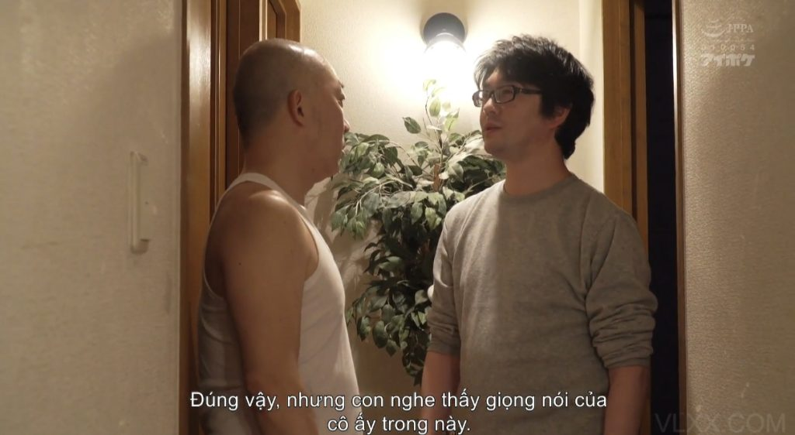

**Chương 66: Lần thứ hai – Tiếng gọi ngoài cửa**
Hà đang ngồi trên lòng ông Quân, hai chân quặp chặt hông ông, thân trên hơi ngả về sau. Con cặc to lớn vẫn còn nằm sâu bên trong lồn cô, mỗi lần ông nhấc hông lên là một cú thúc mạnh khiến cô rên rỉ không thành tiếng. Nước nhờn và tinh dịch của Hoàng vẫn còn loang lổ trên đùi, trộn lẫn với dịch mới tiết ra.
Cô đang chìm trong khoái cảm thì cả hai cùng giật bắn mình.
“Bố ơi… bố ơi!”
Giọng Hoàng vang lên ngay ngoài cửa phòng. Rõ ràng, gần đến mức như đang đứng sát cánh cửa.
Cả ông Quân lẫn Hà cứng đờ trong vòng mười giây. Dương vật ông vẫn còn cắm chặt trong lồn cô, hai người dính vào nhau như bị đóng băng. Tim Hà đập thình thịch đến đau ngực. Mồ hôi lạnh toát ra ở sống lưng.

Trong đầu Hà chỉ còn một ý nghĩ lặp đi lặp lại:
*Xong rồi… Hoàng phát hiện rồi… Nếu anh mở cửa bây giờ, anh sẽ thấy mình đang trần truồng, lồn còn đang ngậm cặc bố chồng… Mọi thứ sẽ sụp đổ…*
Cô cố xoay người, giọng run đến mức suýt khóc:
“Bố… bố ơi… anh Hoàng tới rồi… rút ra mau… con sợ lắm… nếu anh ấy thấy… con không sống nổi đâu…”
Ông Quân cũng thở chậm lại, nhưng tay vẫn giữ chặt eo cô. Dương vật vẫn còn cắm sâu trong lồn. Hà thì thầm tiếp, nước mắt ứa ra:
“Bố… con xin bố… đừng để anh ấy vào… con sợ… con sợ mất hết…”
Khi nghe tiếng nắm cửa xoay, Hà suýt hét lên. Cô nắm chặt tay ông Quân, móng tay cắm vào da ông vì sợ hãi tột độ.
Cô cố ngồi bật dậy. Con cặc tuột ra khỏi lồn với một tiếng “nhẹp” ướt át, một dòng hỗn hợp trắng đục theo đó chảy dài xuống đùi. Cả hai ngồi cạnh nhau trên giường, hoàn toàn trần truồng, nhìn về phía cánh cửa như đang chờ phán quyết.
Bên ngoài, giọng Hoàng tiếp tục:
“Con không thấy Hà đâu cả. Bố có biết cô ấy đi đâu không ạ?”
Hà quay sang nhìn ông Quân. Ánh mắt cô đầy lo sợ, sợ hãi đến mức môi run run. Ông Quân thì mặt vẫn bình thản hơn, nhưng hàm siết chặt, gân cổ nổi rõ. Anh đang tính toán rất nhanh.
“Con vào nhé…”
Tiếng Hoàng nói lại một lần nữa. Âm thanh nắm cửa xoay nhẹ vang lên. Hoàng đã đặt tay lên nắm đấm, chuẩn bị đẩy cửa.
Ông Quân phản ứng cực nhanh. Anh nhảy xuống giường, mặc vội chiếc quần đùi và áo ba lỗ trong chưa đầy năm giây, rồi mở cửa vừa đủ để thân hình mình che khuất hoàn toàn phần trong phòng.
“Con biết là con bé không có ở trong này mà,” ông nói, giọng trầm và hơi cáu.
Hoàng đứng ngoài, hơi ngạc nhiên:
“Đúng vậy… nhưng con nghe thấy giọng của cô ấy trong này.”
Ông Quân nhíu mày, nhìn thẳng vào mắt con trai:
“Con bị ấm đầu không chứ? Có thể trong toilet.” Ông vừa nói vừa cố ý nhìn về phía cửa nhà vệ sinh trong phòng, giọng khẳng định.
Hoàng khựng lại một giây, rồi gật gù:
“Đúng… đúng rồi ha. Con xin lỗi.”
Ông Quân xoay người, mở hé cửa vừa đủ để thân mình lọt qua rồi bước hẳn vào trong, đóng cửa lại ngay. Hoàng đứng ngẩn người ngoài hành lang một lúc, ánh mắt vẫn còn thắc mắc, rồi mới chậm rãi đi về phía phòng ngủ của mình.
Bên trong phòng, Hà vẫn ngồi bất động trên giường, hoàn toàn trần truồng. Hai tay ôm lấy ngực, chân khép chặt, thân hình run bần bật. Cô sợ đến mức suýt ngất – chỉ cần Hoàng đẩy cửa thêm một chút, anh sẽ thấy rõ cảnh tượng: vợ mình trần trụi trên giường bố chồng, lồn còn đang rỉ tinh dịch.
Khi nghe tiếng cửa đóng lại và thấy ông Quân quay trở vào, Hà mới thở phào nhẹ nhõm một phần. Cô vội vàng thì thầm:
“Bố… con nghĩ con phải quay lại ngay bây giờ rồi.”
Cô quay lại nhìn ông. Ông Quân không nói gì. Anh chỉ ngồi xuống phía sau cô, cởi phăng chiếc quần đùi ra. Con cặc vẫn cứng ngắc như khúc củi, nóng hổi. Anh cầm lấy nó, đẩy mạnh vào lồn Hà từ phía sau. Hai tay đặt lên eo cô, bắt đầu nhấp ngay lập tức.
Hà bị địt bất ngờ, vừa rên vừa cố ngoái lại:
“Bố… bố… ư ư… không được… Hoàng còn ngoài…”
Ông Quân không dừng. Anh thúc liên tục, mạnh và sâu. Cơ thể Hà hứng chịu từng cú thúc, bầu ngực rung theo nhịp. Một tay cô cố bịt miệng để kìm tiếng rên, tay kia nắm chặt ga giường đến trắng khớp.
“Con thích con cặc cha tới mức không thể chịu được đúng không?” – ông vừa địt vừa nói, giọng khàn đặc bên tai cô.
“Bố… bố… không được… con sắp ra…” – Hà rên nghẹn, nước mắt ứa ra vì vừa sợ vừa sướng.
Ông Quân kéo tay cô, bắt cô ngồi dậy. Anh nằm ngửa, để Hà ngồi lên trên theo tư thế cưỡi ngựa nhưng quay lưng lại phía mặt ông. Cô tựa hai tay lên đầu gối ông, chủ động nhấp lên xuống. Mỗi lần cô hạ mông xuống, con cặc đâm sâu đến tận cùng.
“Bố ơi… bố… con sướng… con sướng điên lên mất…” – Hà rên rỉ, không còn kìm được nữa.
Một lúc sau, cô xoay người lại, đối mặt với ông. Cô cúi xuống hôn ông Quân, miệng há ra đón lưỡi ông, trong khi vẫn giữ chân nhổm mông lên xuống. Ông Quân nắm lấy eo cô, dùng sức thúc mạnh từ dưới lên. Tiếng “bạch bạch” vang lên ướt át.
Ông đột ngột đẩy Hà ngửa ra phía trước. Con cặc tuột ra khỏi lồn với tiếng “nhẹp”. Ông lật cô sang tư thế doggy, hai tay nắm chặt mông cô banh rộng.
“Nào… chồng mông ra. Ta sẽ xuất tinh vào trong tư thế này. Mông con gái trẻ là tuyệt nhất… ta có thể địt lỗ này thỏa thích đúng không?”
Ông đâm mạnh vào lại, tăng tốc điên cuồng. Hà cố gắng ngăn:
“Bố… đừng xuất… đừng… con sợ…”
Ông Quân cười khàn, vừa địt vừa nói:
“Xuất. Nhận lấy tinh của bố đi. Hãy để tinh của bố và của Hoàng trộn lẫn trong lồn con. Hãy để chúng ta cùng giúp con mang thai.”
Ông nắm chặt hai bên mông Hà, banh rộng, đâm mạnh liên hồi. Mỗi cú thúc đều sâu đến tận cùng, tiếng “bạch bạch” ướt át vang lên.
Hà không còn kìm được nữa. Cô rên dâm đãng, giọng nghẹt vì vừa sợ vừa sướng:
“Ư… bố… mạnh nữa… đụ con đi… cặc bố to quá… sâu quá… con chịu không nổi… ư ư… bố ơi…”
Ông Quân cũng rên lên khàn đặc, giọng đầy khoái cảm chiếm hữu:
“Haa… lồn con siết chặt quá… bố sắp ra… nhận lấy… nhận hết của bố…”
Ông tăng tốc điên cuồng, hai tay siết mông cô đến đỏ. Hà rên to hơn, đầu gục xuống giường, mông chủ động đẩy ngược lại:
“Bố… bố xuất đi… đổ đầy vào con… con muốn… ư… bố ơi… con ra… con ra cùng bố…”
Ông Quân rên một tiếng dài, ôm chặt lấy eo cô, hông giật giật mạnh. Từng đợt tinh dịch đặc sệt, nóng hổi, nhiều gấp ba lần của Hoàng phun thẳng vào tử cung. Hà cũng co giật theo, lồn siết chặt lấy cặc ông, rên lên dâm đãng không ngừng trong lúc tinh trùng tràn đầy bên trong.
Khi ông rút ra, lồn Hà há ra, tinh trùng đặc trắng ồ ạt chảy thành dòng dài xuống đùi, ướt đẫm cả ga giường.
Hà nằm đó thở dốc một lúc, rồi vội vàng lấy quần áo mặc tạm, chân vẫn run. Cô chạy vụt vào nhà tắm.
Trong nhà tắm, cô đứng dưới vòi sen, nước nóng chảy xuống từng centimet da thịt. Cô đưa tay xuống giữa hai chân, cảm nhận dòng tinh dịch đặc của ông Quân vẫn còn từ từ rỉ ra, bị nước cuốn đi thành những sợi trắng đục.
*Mình vừa… để bố chồng xuất vào trong… ngay sau khi Hoàng xuất vào… Hai loại tinh trùng đang ở trong lồn mình cùng lúc… Nếu mang thai thì… là của ai?*
Cô cắn môi, vừa xấu hổ vừa vẫn còn dư âm khoái cảm. Ngón tay cô vô thức chạm vào hột le vẫn còn nhạy cảm, khiến thân thể giật nhẹ. Cô vội rửa nhanh hơn, cố gắng xóa hết dấu vết, nhưng cảm giác bị lấp đầy vẫn còn đọng lại rất rõ.
*Mình đã nghiện rồi… Nghiện cảm giác bị bố chiếm lấy như vậy…*
Cô tắm rất nhanh, chỉ đủ để nước cuốn đi phần tinh dịch bên ngoài, rồi vội vàng lau người, mặc lại đồ ngủ và chạy vào phòng ngủ chung với Hoàng.
Hoàng đang nằm trên giường, mở sẵn chăn. Khi Hà chui vào, anh hỏi:
“Em đi đâu lâu thế?”
Hà nằm xuống, kéo chăn lên đến tận cổ, giọng cố giữ bình tĩnh:
“Em đau bụng… vào nhà tắm ngâm mình cho thoải mái nên hơi lâu.”
Hoàng gật đầu, ôm cô vào lòng. Một lúc sau, khi chăn bị xô lệch, anh nhìn xuống đùi vợ. Một dòng trắng đục đang từ từ chảy ra từ khe lồn Hà, loang ướt cả phần ga.
“Em… cái gì đây?” – Hoàng ngạc nhiên.
Hà nhanh trí, mặt đỏ bừng nhưng vẫn nói liền:
“Tinh trùng của anh đó… nãy anh xuất nhiều quá, đến giờ nó vẫn trào ra mãi chưa hết.”
Hoàng cười, có vẻ tự hào:
“Vậy thì lần này anh giỏi nhỉ. Ra nhiều và giữ lâu vậy. Mong là có tin vui.”
Hà chỉ cười nhẹ, rồi quay mặt đi, nhắm mắt. Cô mặc kệ dòng tinh dịch vẫn còn rỉ ra dưới chăn, và mặc kệ trái tim mình vẫn còn đập thình thịch vì những gì vừa xảy ra cách đó chưa đầy mười lăm phút.
Hà nằm trong vòng tay Hoàng, mắt nhắm nhưng không ngủ được ngay. Dưới chăn, lồn cô vẫn còn hơi ướt, thỉnh thoảng lại có một ít tinh dịch rỉ ra.
Cô nghĩ thầm:
*Trong lồn mình lúc này đang có hai loại tinh trùng… của chồng và của bố chồng… Chúng đang cùng tồn tại, cùng cạnh tranh với nhau… Hoàng thì mong có tin vui, còn bố thì cố tình đổ đầy vào để “đuổi” tinh của con trai… Nếu thật sự mang thai… mình sẽ mang con của ai?*
Cảm giác vừa tội lỗi vừa kích thích khiến cô siết nhẹ hai chân lại. Cô vùi mặt vào ngực Hoàng, giả vờ ngủ say, nhưng trong đầu vẫn còn vang vọng tiếng rên của ông Quân và cảm giác cặc ông đang đâm sâu trong người lúc nãy.
—
**Phòng bên cạnh – Tâm trạng ông Quân**
Ông Quân nằm dài trên giường, trần truồng, một tay gác lên trán. Căn phòng vẫn còn mùi nồng nàn của sex và mùi nước hoa của Hà. Ga giường ướt đẫm tinh dịch và nước nhờn.
Anh không ngủ được.
Trong đầu ông vẫn còn hình ảnh Hà trần trụi, lồn há ra, tinh của mình chảy ra thành dòng. Cảm giác lồn cô siết chặt lúc ông xuất vẫn còn rõ ràng đến mức dương vật ông lại hơi căng lên.
Ông mỉm cười trong bóng tối.
*Suýt nữa thì bị phát hiện… Nhưng cuối cùng vẫn ổn. Con trai ngu ngốc của mình chẳng nghi ngờ gì cả.*
Ông nhớ lại ánh mắt sợ hãi của Hà lúc nghe tiếng Hoàng gọi cửa, rồi ánh mắt ấy nhanh chóng chuyển thành khoái cảm khi ông đâm vào lần nữa. Cô đã nghiện rồi. Cô đã thuộc về ông nhiều hơn là thuộc về Hoàng.
Ông Quân đưa tay xuống, nắm lấy dương vật vẫn còn ẩm ướt, vuốt nhẹ.
*Tinh của bố đã nằm sâu trong tử cung nó rồi… Cùng với tinh của thằng con trai. Giờ chỉ cần chờ… Nếu có
thai, dù là của ai, nó cũng sẽ càng dính chặt với bố hơn.*
Ông nhắm mắt, hài lòng. Đêm nay ông đã thắng thêm một ván nữa. Và ông biết, sẽ còn nhiều đêm như thế này nữa.